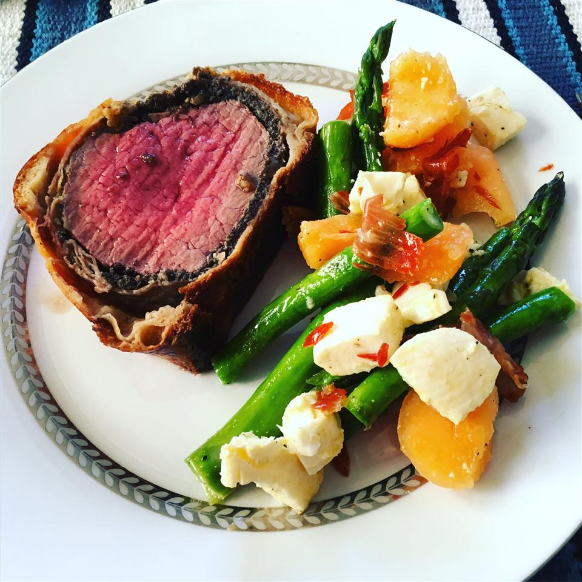

Beef Wellington Recipe

Ingredients
- 2½ pounds beef tenderloin
- 2 tablespoons butter, softened
- 2 tablespoons butter
- 1 onion, chopped
- ½ cup sliced fresh mushrooms
- 2 ounces liver pate
- 2 tablespoons butter, softened
- salt and pepper to taste
- 1 (17.5 ounce) package frozen puff pastry, thawed
- 1 egg yolk, beaten
- 1 (10.5 ounce) can beef broth
- 2 tablespoons red wine
Directions
- Preheat oven to 425 degrees F (220 degrees C). Place beef in a small baking dish, and
spread with 2 tablespoons softened butter. Bake for 10 to 15 minutes, or until
browned. Remove from pan, and allow to cool completely. Reserve pan juices.
-
Melt 2 tablespoons butter in a skillet over medium heat. Saute onion and mushrooms
in butter for 5 minutes. Remove from heat, and let cool.
-
Mix together pate and 2 tablespoons softened butter, and season with salt and
pepper. Spread pate over beef. Top with onion and mushroom mixture.
-
Roll out the puff pastry dough, and place beef in the center. Fold up, and seal all the
edges, making sure the seams are not too thick. Place beef in a 9x13 inch baking dish,
cut a few slits in the top of the dough, and brush with egg yolk.
-
Bake at 450 degrees F (230 degrees C) for 10 minutes, then reduce heat to 425 degrees
F (220 degrees C) for 10 to 15 more minutes, or until pastry is a rich, golden brown.
Set aside, and keep warm.
-
Place all reserved juices in a small saucepan over high heat. Stir in beef stock and red
wine; boil for 10 to 15 minutes, or until slightly reduced. Strain, and serve with beef.
Return to Index